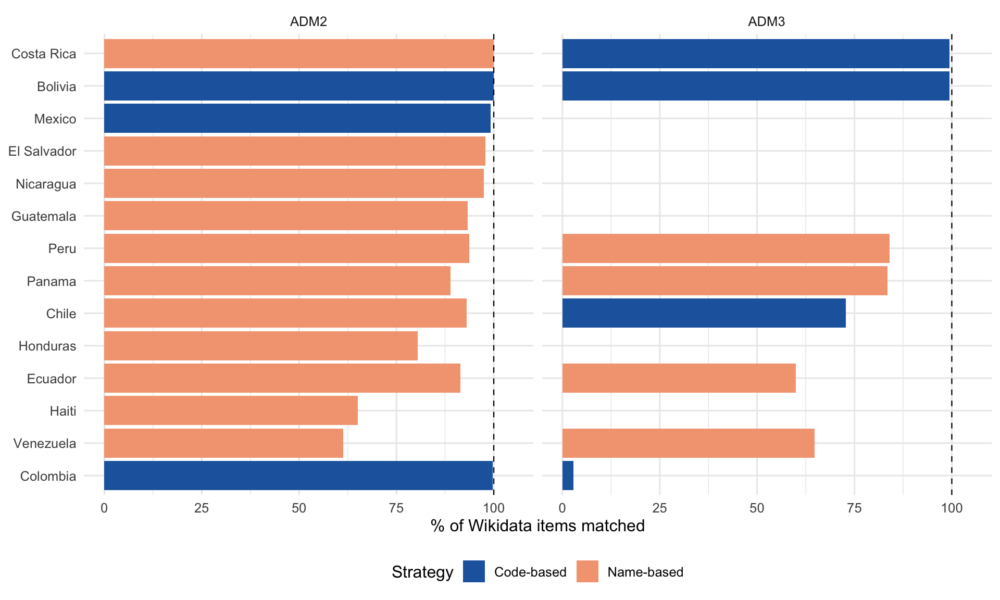

Show code
library(sf)
library(httr)
library(jsonlite)
library(dplyr)
library(purrr)
library(stringr)
library(tidyr)
library(tibble)
library(stringi)
library(ggplot2)
source("src/pcode-crosswalk.R")
source("R/create_quick_statement.R")This document builds and evaluates a crosswalk between Wikidata QIDs and OCHA p-codes from the Global Administrative Boundaries GDB (maps/global_admin_boundaries_matched_latest.gdb), which contains:
Six countries that appear in the Wikipedia presence analysis are absent from the GDB (Argentina, Brazil, Paraguay, Suriname, Uruguay, Cuba, Puerto Rico) and are excluded throughout. The 15 remaining countries in both datasets are the focus here.
Two strategies are applied in priority order:
The pipeline is implemented in src/pcode-crosswalk.R. QuickStatements to add P7590 (OCHA P-code) to matched items are generated at the end of this document but are not executed — a manual quality review is expected first.
library(sf)
library(httr)
library(jsonlite)
library(dplyr)
library(purrr)
library(stringr)
library(tidyr)
library(tibble)
library(stringi)
library(ggplot2)
source("src/pcode-crosswalk.R")
source("R/create_quick_statement.R")GDB_PATH <- "maps/global_admin_boundaries_matched_latest.gdb"
adm2_sf <- st_read(GDB_PATH, layer = "admin2", quiet = TRUE)
adm3_sf <- st_read(GDB_PATH, layer = "admin3", quiet = TRUE)
cat("ADM2:", nrow(adm2_sf), "features\n")ADM2: 19705 featurescat("ADM3:", nrow(adm3_sf), "features\n")ADM3: 55622 featuresThe 15 countries present in both the GDB and the Wikipedia presence analysis, with their ISO 3166-1 alpha-2 codes used to join the two sources:
# Countries in the Wikipedia presence analysis (from wikipedia-admin-presence.qmd)
# that also appear in the GDB
our_countries_gdb <- tribble(
~country, ~country_qid, ~iso2,
"Bolivia", "Q750", "BO",
"Chile", "Q298", "CL",
"Colombia", "Q739", "CO",
"Costa Rica", "Q800", "CR",
"Dominican Republic", "Q786", "DO",
"Ecuador", "Q736", "EC",
"El Salvador", "Q792", "SV",
"Guatemala", "Q774", "GT",
"Haiti", "Q790", "HT",
"Honduras", "Q783", "HN",
"Mexico", "Q96", "MX",
"Nicaragua", "Q811", "NI",
"Panama", "Q804", "PA",
"Peru", "Q419", "PE",
"Venezuela", "Q717", "VE"
)
knitr::kable(
our_countries_gdb |> select(country, iso2),
caption = "Countries present in both the GDB and the Wikipedia presence analysis"
)| country | iso2 |
|---|---|
| Bolivia | BO |
| Chile | CL |
| Colombia | CO |
| Costa Rica | CR |
| Dominican Republic | DO |
| Ecuador | EC |
| El Salvador | SV |
| Guatemala | GT |
| Haiti | HT |
| Honduras | HN |
| Mexico | MX |
| Nicaragua | NI |
| Panama | PA |
| Peru | PE |
| Venezuela | VE |
Strip geometry, attach country labels, and select the columns used for matching and name lookups.
adm2_gdb <- adm2_sf |>
st_drop_geometry() |>
inner_join(our_countries_gdb |> select(country, iso2), by = "iso2") |>
select(country, iso2, adm0_pcode, adm1_pcode, adm2_pcode,
adm2_name, adm2_name1, adm2_name2, adm2_name3)
adm3_gdb <- adm3_sf |>
st_drop_geometry() |>
inner_join(our_countries_gdb |> select(country, iso2), by = "iso2") |>
select(country, iso2, adm1_pcode, adm2_pcode, adm3_pcode,
adm3_name, adm3_name1, adm3_name2, adm3_name3)
cat("ADM2 rows in scope:", nrow(adm2_gdb), "\n")ADM2 rows in scope: 5673 cat("ADM3 rows in scope:", nrow(adm3_gdb), "\n")ADM3 rows in scope: 11178 all_data is loaded from the cached presence-matrix pipeline in wikipedia-admin-presence.qmd. It provides one row per Wikidata item with its English and Spanish labels and admin level.
# Load presence data from the admin presence pipeline cache
sa_adm2_all <- readRDS("data/cache/sa_adm2_all.rds")
sa_adm3_all <- readRDS("data/cache/sa_adm3_all.rds")
newc_adm2_all <- readRDS("data/cache/newc_adm2_all.rds")
newc_adm3_all <- readRDS("data/cache/newc_adm3_all.rds")
brazil_cache <- "data/cache/sa_adm2_brazil_df.rds"
all_tiers <- list(sa_adm2_all, sa_adm3_all, newc_adm2_all, newc_adm3_all)
if (file.exists(brazil_cache)) all_tiers <- c(all_tiers, list(readRDS(brazil_cache)))
all_data <- bind_rows(all_tiers)
# Keep only the columns used by the crosswalk pipeline
all_data <- all_data |>
select(qid, country, adm_level, label_en, label_es) |>
filter(country %in% our_countries_gdb$country)
cat("Wikidata items in scope:", nrow(all_data), "\n")Wikidata items in scope: 11657 cat("Countries:", n_distinct(all_data$country), "\n")Countries: 15 all_data |> count(adm_level)# A tibble: 2 × 2
adm_level n
<chr> <int>
1 ADM2 5738
2 ADM3 5919The following table records which Wikidata property encodes the pcode suffix for each country. The pcode is reconstructed as paste0(iso2, property_value). Property coverage was verified by sampling items and comparing constructed codes against the GDB pcode lists.
knitr::kable(
PCODE_CODE_PROPERTIES |>
mutate(adm_levels = map_chr(adm_levels, paste, collapse = " + ")) |>
select(Country = country, Property = pid, `ISO2 prefix` = iso2,
`Admin levels` = adm_levels),
caption = "Wikidata properties used for code-based pcode matching"
)| Country | Property | ISO2 prefix | Admin levels |
|---|---|---|---|
| Bolivia | P14142 | BO | c(“ADM2”, “ADM3”) |
| Colombia | P7325 | CO | c(“ADM2”, “ADM3”) |
| Mexico | P3801 | MX | ADM2 |
| Costa Rica | P281 | CR | ADM3 |
| Chile | P6929 | CL | ADM3 |
| Haiti | P1370 | HT | ADM2 |
Properties investigated but not adopted:
| Country | Property | Reason not used |
|---|---|---|
| Argentina | P4833 (INDEC) | Argentina absent from GDB |
| Colombia | P2082 | Not populated on sampled items; P7325 preferred |
| Haiti | P1370 | Very sparse — most arrondissements lack it |
| All | P7590 (OCHA P-code) | Not yet populated — this crosswalk will add it |
For countries without a reliable code property, labels are normalized and compared to GDB name columns:
(country, normalized_name). Only one-to-one matches are kept (n_gdb_hits == 1).crosswalk <- build_pcode_crosswalk(
all_data = all_data,
adm2_gdb = adm2_gdb,
adm3_gdb = adm3_gdb,
hierarchical_countries = c("Venezuela", "Panama"),
sparql_batch_size = 300,
sparql_delay = 0.4,
cache_file = "data/cache/crosswalk_qid_pcode.rds"
)
cat("Total matched items:", nrow(crosswalk), "\n")Total matched items: 9742 cat("Unique QIDs: ", n_distinct(crosswalk$qid), "\n")Unique QIDs: 9742 gdb_countries <- our_countries_gdb$country
total_in_scope <- all_data |>
count(country, adm_level, name = "n_wikidata")
coverage <- crosswalk |>
count(country, adm_level, match_method, name = "n_matched") |>
left_join(total_in_scope, by = c("country", "adm_level")) |>
mutate(pct = round(100 * n_matched / n_wikidata, 1))
# Roll up to country × adm_level for a clean summary
coverage_summary <- crosswalk |>
count(country, adm_level, name = "n_matched") |>
left_join(total_in_scope, by = c("country", "adm_level")) |>
mutate(
pct = round(100 * n_matched / n_wikidata, 1),
primary_method = case_when(
country == "Bolivia" ~ "code (P14142)",
country == "Colombia" ~ "code (P7325)",
country == "Mexico" ~ "code (P3801)",
country == "Costa Rica" & adm_level == "ADM3" ~ "code (P281)",
country == "Chile" & adm_level == "ADM3" ~ "code (P6929)",
TRUE ~ "name match"
)
) |>
arrange(country, adm_level)
knitr::kable(
coverage_summary |>
select(Country = country, Level = adm_level,
`WD items` = n_wikidata, Matched = n_matched,
`%` = pct, `Primary method` = primary_method),
caption = "Crosswalk coverage by country and administrative level"
)| Country | Level | WD items | Matched | % | Primary method |
|---|---|---|---|---|---|
| Bolivia | ADM2 | 112 | 112 | 100.0 | code (P14142) |
| Bolivia | ADM3 | 341 | 339 | 99.4 | code (P14142) |
| Chile | ADM2 | 57 | 53 | 93.0 | name match |
| Chile | ADM3 | 485 | 353 | 72.8 | code (P6929) |
| Colombia | ADM2 | 1107 | 1104 | 99.7 | code (P7325) |
| Colombia | ADM3 | 108 | 3 | 2.8 | code (P7325) |
| Costa Rica | ADM2 | 84 | 84 | 100.0 | name match |
| Costa Rica | ADM3 | 495 | 492 | 99.4 | code (P281) |
| Ecuador | ADM2 | 222 | 203 | 91.4 | name match |
| Ecuador | ADM3 | 568 | 340 | 59.9 | name match |
| El Salvador | ADM2 | 45 | 44 | 97.8 | name match |
| Guatemala | ADM2 | 341 | 318 | 93.3 | name match |
| Haiti | ADM2 | 43 | 28 | 65.1 | name match |
| Honduras | ADM2 | 298 | 240 | 80.5 | name match |
| Mexico | ADM2 | 2481 | 2461 | 99.2 | code (P3801) |
| Nicaragua | ADM2 | 153 | 149 | 97.4 | name match |
| Panama | ADM2 | 81 | 72 | 88.9 | name match |
| Panama | ADM3 | 698 | 583 | 83.5 | name match |
| Peru | ADM2 | 205 | 192 | 93.7 | name match |
| Peru | ADM3 | 1892 | 1589 | 84.0 | name match |
| Venezuela | ADM2 | 352 | 216 | 61.4 | name match |
| Venezuela | ADM3 | 1186 | 767 | 64.7 | name match |
coverage_summary |>
mutate(
strategy = if_else(str_starts(primary_method, "code"), "Code-based", "Name-based"),
country = reorder(country, pct, FUN = mean)
) |>
ggplot(aes(x = pct, y = country, fill = strategy)) +
geom_col(position = position_dodge2(preserve = "single", padding = 0.15)) +
geom_vline(xintercept = 100, linetype = "dashed", linewidth = 0.4) +
facet_wrap(~ adm_level) +
scale_fill_manual(values = c("Code-based" = "#2166AC", "Name-based" = "#F4A582")) +
scale_x_continuous(limits = c(0, 105), breaks = seq(0, 100, 25)) +
labs(x = "% of Wikidata items matched", y = NULL, fill = "Strategy") +
theme_minimal(base_size = 12) +
theme(legend.position = "bottom")
unmatched <- all_data |>
anti_join(crosswalk, by = "qid") |>
count(country, adm_level, name = "n_unmatched") |>
left_join(total_in_scope, by = c("country", "adm_level")) |>
mutate(pct_unmatched = round(100 * n_unmatched / n_wikidata, 1)) |>
filter(n_unmatched > 0) |>
arrange(desc(n_unmatched))
knitr::kable(
unmatched |>
select(Country = country, Level = adm_level,
Unmatched = n_unmatched, `Total WD` = n_wikidata,
`% unmatched` = pct_unmatched),
caption = "Unmatched Wikidata items by country and level"
)| Country | Level | Unmatched | Total WD | % unmatched |
|---|---|---|---|---|
| Venezuela | ADM3 | 419 | 1186 | 35.3 |
| Peru | ADM3 | 303 | 1892 | 16.0 |
| Ecuador | ADM3 | 228 | 568 | 40.1 |
| Dominican Republic | ADM2 | 157 | 157 | 100.0 |
| Haiti | ADM3 | 146 | 146 | 100.0 |
| Venezuela | ADM2 | 136 | 352 | 38.6 |
| Chile | ADM3 | 132 | 485 | 27.2 |
| Panama | ADM3 | 115 | 698 | 16.5 |
| Colombia | ADM3 | 105 | 108 | 97.2 |
| Honduras | ADM2 | 58 | 298 | 19.5 |
| Guatemala | ADM2 | 23 | 341 | 6.7 |
| Mexico | ADM2 | 20 | 2481 | 0.8 |
| Ecuador | ADM2 | 19 | 222 | 8.6 |
| Haiti | ADM2 | 15 | 43 | 34.9 |
| Peru | ADM2 | 13 | 205 | 6.3 |
| Panama | ADM2 | 9 | 81 | 11.1 |
| Chile | ADM2 | 4 | 57 | 7.0 |
| Nicaragua | ADM2 | 4 | 153 | 2.6 |
| Colombia | ADM2 | 3 | 1107 | 0.3 |
| Costa Rica | ADM3 | 3 | 495 | 0.6 |
| Bolivia | ADM3 | 2 | 341 | 0.6 |
| El Salvador | ADM2 | 1 | 45 | 2.2 |
The largest gaps are:
crosswalk |>
count(match_method, name = "n") |>
mutate(
pct = round(100 * n / nrow(crosswalk), 1),
strategy = if_else(str_starts(match_method, "code"), "Code-based", "Name-based")
) |>
arrange(strategy, match_method) |>
knitr::kable(caption = "Crosswalk entries by match method")| match_method | n | pct | strategy |
|---|---|---|---|
| code_P14142 | 451 | 4.6 | Code-based |
| code_P281 | 491 | 5.0 | Code-based |
| code_P3801 | 2457 | 25.2 | Code-based |
| code_P6929 | 281 | 2.9 | Code-based |
| code_P7325 | 1100 | 11.3 | Code-based |
| name_adm2 | 1607 | 16.5 | Name-based |
| name_adm3 | 3145 | 32.3 | Name-based |
| name_adm3_hierarchical | 210 | 2.2 | Name-based |
The function below pulls a stratified sample of name-matched items and shows the Wikidata label alongside the GDB name it matched. Scan for false positives (same normalized string, different real-world unit).
spot_check_name_matches <- function(crosswalk, all_data, adm2_gdb, adm3_gdb,
country_filter = NULL, n = 20, seed = 5501) {
set.seed(seed)
xw <- crosswalk |>
filter(str_starts(match_method, "name")) |>
left_join(all_data |> select(qid, label_en, label_es), by = "qid")
if (!is.null(country_filter)) xw <- xw |> filter(country %in% country_filter)
adm2_names <- adm2_gdb |> distinct(adm2_pcode, gdb_name = adm2_name)
adm3_names <- adm3_gdb |> distinct(adm3_pcode, gdb_name = adm3_name)
xw |>
left_join(adm2_names, by = "adm2_pcode") |>
left_join(adm3_names, by = "adm3_pcode") |>
mutate(gdb_name = coalesce(gdb_name.x, gdb_name.y)) |>
select(qid, country, adm_level, match_method,
wd_label_en = label_en, wd_label_es = label_es,
gdb_name, pcode) |>
slice_sample(n = min(n, nrow(xw)))
}spot_check_name_matches(crosswalk, all_data, adm2_gdb, adm3_gdb, n = 30) |>
knitr::kable(caption = "Random sample of name-matched items for review")| qid | country | adm_level | match_method | wd_label_en | wd_label_es | gdb_name | pcode |
|---|---|---|---|---|---|---|---|
| Q3313291 | Peru | ADM3 | name_adm3 | San Vicente de Cañete District | Distrito de San Vicente de Cañete | San Vicente de Cañete | PE150501 |
| Q611291 | Venezuela | ADM3 | name_adm3 | Parroquia Lezama | Parroquia Lezama | Lezama | VE120902 |
| Q4848913 | Peru | ADM3 | name_adm3 | Bajo Biavo District | Distrito de Bajo Biavo | Bajo Biavo | PE220203 |
| Q21157181 | Panama | ADM3 | name_adm3 | Sambú | Sambú | Sambú | PA050112 |
| Q2393454 | Honduras | ADM2 | name_adm2 | Magdalena | Magdalena | Magdalena | HN1008 |
| Q5139413 | Peru | ADM3 | name_adm3 | Cochorco District | Distrito de Cochorco | Cochorco | PE130903 |
| Q16639801 | Venezuela | ADM3 | name_adm3 | Granados | Granados | Granados | VE210303 |
| Q28225642 | Panama | ADM3 | name_adm3 | Barrio Colón | NA | Barrio Colón | PA110404 |
| Q606975 | Venezuela | ADM2 | name_adm2 | Municipio Aragua | Municipio Aragua | Aragua | VE0302 |
| Q3313347 | Peru | ADM3 | name_adm3 | Santiago de Anchucaya District | Distrito de Santiago de Anchucaya | Santiago de Anchucaya | PE150729 |
| Q2393269 | Honduras | ADM2 | name_adm2 | Camasca | Camasca | Camasca | HN1002 |
| Q6087669 | Panama | ADM3 | name_adm3 | Progreso | Progreso | Progreso | PA020203 |
| Q3274 | Nicaragua | ADM2 | name_adm2 | Managua | Managua | Managua | NI5525 |
| Q568999 | Guatemala | ADM2 | name_adm2 | San Luis Jilotepeque | San Luis Jilotepeque | San Luis Jilotepeque | GT2103 |
| Q3050086 | Venezuela | ADM3 | name_adm3 | El Molino | El Molino | El Molino | VE140504 |
| Q2402824 | Guatemala | ADM2 | name_adm2 | Cuyotenango | Cuyotenango | Cuyotenango | GT1002 |
| Q3471094 | Venezuela | ADM3 | name_adm3 | NA | Samuel Darío Maldonado | Samuel Darío Maldonado | VE202201 |
| Q6319436 | Peru | ADM3 | name_adm3 | Ninabamba District | Distrito de Ninabamba | Ninabamba | PE061306 |
| Q111543533 | Ecuador | ADM3 | name_adm3 | Cumandá | Cumandá | Cumanda | EC061050 |
| Q2113237 | Honduras | ADM2 | name_adm2 | San Lorenzo | San Lorenzo | San Lorenzo | HN1709 |
| Q5047837 | Peru | ADM3 | name_adm3 | Casa Grande District | Distrito de Casa Grande | Casa Grande | PE130208 |
| Q23660288 | Chile | ADM3 | name_adm3 | Linares | Linares | Linares | CL07401 |
| Q2216549 | Panama | ADM2 | name_adm2 | Renacimiento District | Renacimiento | Renacimiento | PA0210 |
| Q16681069 | Venezuela | ADM3 | name_adm3 | Tres Esquinas | Tres Esquinas | Tres Esquinas | VE211807 |
| Q1729098 | Honduras | ADM2 | name_adm2 | Yuscarán | Yuscarán | Yuscaran | HN0701 |
| Q2405941 | Costa Rica | ADM2 | name_adm2 | Santo Domingo Canton | Cantón de Santo Domingo | Santo Domingo | CR403 |
| Q1958679 | Honduras | ADM2 | name_adm2 | Danlí | Danlí | Danli | HN0703 |
| Q2702986 | Peru | ADM3 | name_adm3 | Uranmarca District | Distrito de Uranmarca | Uranmarca | PE030607 |
| Q1023655 | Guatemala | ADM2 | name_adm2 | Salamá | Salamá | Salamá | GT1501 |
| Q2697794 | Peru | ADM3 | name_adm3 | Llacllin District | Distrito de Llacllín | Llacllin | PE021705 |
Code matches are structurally reliable (property value = numeric pcode suffix), but it is worth confirming a few against the GDB name to catch any systematic encoding errors.
set.seed(1783)
adm2_names <- adm2_gdb |> distinct(adm2_pcode, gdb_name_adm2 = adm2_name)
adm3_names <- adm3_gdb |> distinct(adm3_pcode, gdb_name_adm3 = adm3_name)
crosswalk |>
filter(str_starts(match_method, "code")) |>
left_join(all_data |> select(qid, label_en), by = "qid") |>
left_join(adm2_names, by = "adm2_pcode") |>
left_join(adm3_names, by = "adm3_pcode") |>
mutate(gdb_name = coalesce(gdb_name_adm2, gdb_name_adm3)) |>
select(qid, country, adm_level, pcode, match_method, label_en, gdb_name) |>
group_by(match_method) |>
slice_sample(n = 5) |>
ungroup() |>
knitr::kable(caption = "Sample of code-matched items (5 per property)")| qid | country | adm_level | pcode | match_method | label_en | gdb_name |
|---|---|---|---|---|---|---|
| Q1303284 | Bolivia | ADM3 | BO021402 | code_P14142 | Coripata Municipality | Coripata |
| Q491527 | Bolivia | ADM3 | BO020902 | code_P14142 | Sapahaqui Municipality | Sapahaqui |
| Q1552096 | Bolivia | ADM3 | BO020905 | code_P14142 | Cairoma Municipality | Cairoma |
| Q1107940 | Bolivia | ADM3 | BO070104 | code_P14142 | La Guardia | La Guardia |
| Q647771 | Bolivia | ADM3 | BO040503 | code_P14142 | Cruz De Machacamarca | Cruz de Machacamarca |
| Q3946914 | Costa Rica | ADM3 | CR10308 | code_P281 | San Cristóbal | San Cristobal |
| Q2033984 | Costa Rica | ADM3 | CR61301 | code_P281 | Puerto Jiménez | Puerto Jiménez |
| Q3677436 | Costa Rica | ADM3 | CR30704 | code_P281 | Cipreses | Cipreses |
| Q3211297 | Costa Rica | ADM3 | CR11401 | code_P281 | San Vicente | San Vicente |
| Q3941341 | Costa Rica | ADM3 | CR20607 | code_P281 | El Rosario | El Rosario |
| Q16488640 | Mexico | ADM2 | MX24003 | code_P3801 | Aquismón Municipality | Aquismón |
| Q20275700 | Mexico | ADM2 | MX16027 | code_P3801 | Chucándiro Municipality | Chucándiro |
| Q2502727 | Mexico | ADM2 | MX08040 | code_P3801 | Madera Municipality | Madera |
| Q20290867 | Mexico | ADM2 | MX16070 | code_P3801 | Purépero Municipality | Purépero |
| Q3294614 | Mexico | ADM2 | MX16077 | code_P3801 | San Lucas Municipality | San Lucas |
| Q13063 | Chile | ADM3 | CL09106 | code_P6929 | Galvarino | Galvarino |
| Q200965 | Chile | ADM3 | CL08312 | code_P6929 | Tucapel | Tucapel |
| Q3735 | Chile | ADM3 | CL04202 | code_P6929 | Canela | Canela |
| Q13049 | Chile | ADM3 | CL09105 | code_P6929 | Freire | Freire |
| Q13048 | Chile | ADM3 | CL08104 | code_P6929 | Florida | Florida |
| Q1525701 | Colombia | ADM2 | CO25799 | code_P7325 | Tenjo | Tenjo |
| Q444511 | Colombia | ADM2 | CO13030 | code_P7325 | Altos del Rosario | Altos del Rosario |
| Q2434056 | Colombia | ADM2 | CO13620 | code_P7325 | San Cristóbal | San Cristóbal |
| Q634563 | Colombia | ADM2 | CO66075 | code_P7325 | Balboa | Balboa |
| Q1442348 | Colombia | ADM2 | CO25817 | code_P7325 | Tocancipá | Tocancipá |
These 210 items were ambiguous at the country level but resolved via P131. A higher proportion of these merit individual review.
set.seed(2290)
crosswalk |>
filter(match_method == "name_adm3_hierarchical") |>
left_join(all_data |> select(qid, label_en, label_es), by = "qid") |>
left_join(adm3_names, by = "adm3_pcode") |>
select(qid, country, pcode, adm2_pcode, wd_label_en = label_en,
wd_label_es = label_es, gdb_name = gdb_name_adm3) |>
slice_sample(n = 20) |>
knitr::kable(caption = "Sample of hierarchically resolved ADM3 matches")| qid | country | pcode | adm2_pcode | wd_label_en | wd_label_es | gdb_name |
|---|---|---|---|---|---|---|
| Q21014463 | Panama | PA130205 | PA1302 | El Potrero | El Potrero | El Potrero |
| Q21065781 | Panama | PA070205 | PA0702 | Leones | Leones | Leones |
| Q6115163 | Panama | PA030607 | PA0306 | Río Grande | Río Grande | Río Grande |
| Q5489478 | Venezuela | VE231302 | VE2313 | Parroquia Bolívar | Parroquia Bolívar | Bolívar |
| Q16675617 | Venezuela | VE210505 | VE2105 | Santa Cruz | Santa Cruz | Santa Cruz |
| Q16302718 | Panama | PA040505 | PA0405 | Palmira | Palmira | Palmira |
| Q21042281 | Panama | PA130703 | PA1307 | Leones | Leones | Leones |
| Q16675509 | Venezuela | VE210407 | VE2104 | San José | San José | San José |
| Q16651832 | Venezuela | VE211402 | VE2114 | NA | La Concepción | La Concepción |
| Q6059076 | Panama | PA020406 | PA0204 | Palmira | Palmira | Palmira |
| Q16301879 | Panama | PA110503 | PA1105 | Guayabito | Guayabito | Guayabito |
| Q20018155 | Panama | PA090221 | PA0902 | Santo Domingo | Santo Domingo | Santo Domingo |
| Q3009627 | Venezuela | VE200501 | VE2005 | NA | Cárdenas | Cárdenas |
| Q3472574 | Venezuela | VE151203 | VE1512 | Santa Barbara | Santa Bárbara | Santa Barbará |
| Q5822769 | Panama | PA070604 | PA0706 | El Pedregoso | El Pedregoso | El Pedregoso |
| Q3472641 | Venezuela | VE060404 | VE0604 | Parroquia Santa Inés | Parroquia Santa Inés | Santa Inés |
| Q3471642 | Venezuela | VE160811 | VE1608 | Parroquia San Vicente | Parroquia San Vicente | San Vicente |
| Q20018151 | Panama | PA090219 | PA0902 | San José | San José | San José |
| Q3049698 | Venezuela | VE090602 | VE0906 | Parroquia El Amparo | Parroquia El Amparo | El Amparo |
| Q16303982 | Venezuela | VE210802 | VE2108 | Arnoldo Gabaldon | Arnoldo Gabaldón | Arnoldo Gabaldon |
Name matches where the GDB contains more than one unit with the same normalized name in the same country are by construction excluded from the crosswalk (n_gdb_hits == 1 filter). This section documents how many items were dropped for this reason per country.
# Re-run the name join without the n_gdb_hits filter to count ambiguous cases
normalize_admin_name <- function(x) {
x |> str_to_lower() |> stri_trans_general("Latin-ASCII") |>
str_replace_all("[^a-z0-9]+", " ") |> str_squish()
}
wd_adm2_labels <- all_data |>
filter(adm_level == "ADM2") |>
pivot_longer(c(label_en, label_es), values_to = "raw", names_to = "lang") |>
filter(!is.na(raw)) |>
mutate(norm = normalize_admin_name(raw)) |>
distinct(qid, country, norm)
gdb_adm2_norm <- adm2_gdb |>
pivot_longer(starts_with("adm2_name"), values_to = "raw", names_to = "nv") |>
filter(!is.na(raw), raw != "") |>
mutate(norm = normalize_admin_name(raw)) |>
distinct(country, adm2_pcode, norm)
wd_adm2_labels |>
inner_join(gdb_adm2_norm, by = c("country", "norm"),
relationship = "many-to-many") |>
group_by(qid, country) |>
summarise(n_gdb_hits = n_distinct(adm2_pcode), .groups = "drop") |>
filter(n_gdb_hits > 1) |>
count(country, name = "n_ambiguous") |>
arrange(desc(n_ambiguous)) |>
knitr::kable(caption = "ADM2 items dropped due to ambiguous name match (>1 GDB unit)")| country | n_ambiguous |
|---|---|
| Colombia | 148 |
| Honduras | 46 |
| Venezuela | 16 |
| Guatemala | 12 |
| Mexico | 12 |
For country × level combinations with ≥ 85% match rate the residual gap is small enough to inspect unit by unit. Both sides of the join are shown: Wikidata items with no pcode, and GDB units with no QID.
high_coverage <- coverage_summary |>
filter(pct >= 85) |>
select(country, adm_level, n_matched, n_wikidata, pct)
knitr::kable(
high_coverage |>
select(Country = country, Level = adm_level,
Matched = n_matched, `WD total` = n_wikidata, `%` = pct),
caption = "Country × level strata with ≥ 85% match rate"
)| Country | Level | Matched | WD total | % |
|---|---|---|---|---|
| Bolivia | ADM2 | 112 | 112 | 100.0 |
| Bolivia | ADM3 | 339 | 341 | 99.4 |
| Chile | ADM2 | 53 | 57 | 93.0 |
| Colombia | ADM2 | 1104 | 1107 | 99.7 |
| Costa Rica | ADM2 | 84 | 84 | 100.0 |
| Costa Rica | ADM3 | 492 | 495 | 99.4 |
| Ecuador | ADM2 | 203 | 222 | 91.4 |
| El Salvador | ADM2 | 44 | 45 | 97.8 |
| Guatemala | ADM2 | 318 | 341 | 93.3 |
| Mexico | ADM2 | 2461 | 2481 | 99.2 |
| Nicaragua | ADM2 | 149 | 153 | 97.4 |
| Panama | ADM2 | 72 | 81 | 88.9 |
| Peru | ADM2 | 192 | 205 | 93.7 |
These items exist in Wikidata but have no GDB pcode in the crosswalk. Likely causes in high-coverage countries: the unit was created, renamed, or split after the GDB snapshot; the Wikidata label is in an unexpected language or spelling; or the Wikidata item covers a slightly different geographic entity (e.g. a city item vs. a municipality item).
unmatched_wd <- all_data |>
semi_join(high_coverage, by = c("country", "adm_level")) |>
anti_join(crosswalk, by = "qid") |>
mutate(
wd_link = paste0("[", qid, "](https://www.wikidata.org/wiki/", qid, ")")
) |>
arrange(country, adm_level, label_en) |>
select(Country = country, Level = adm_level,
QID = wd_link, `Label (en)` = label_en, `Label (es)` = label_es)
cat(nrow(unmatched_wd), "unmatched Wikidata items across",
n_distinct(paste(unmatched_wd$Country, unmatched_wd$Level)), "strata\n")101 unmatched Wikidata items across 11 strataknitr::kable(unmatched_wd,
caption = "Wikidata items with no GDB pcode (high-coverage strata)")| Country | Level | QID | Label (en) | Label (es) |
|---|---|---|---|---|
| Bolivia | ADM3 | Q1324520 | El Puente Municipality | NA |
| Bolivia | ADM3 | Q106409795 | San Pedro de Macha Municipality | NA |
| Chile | ADM2 | Q201131 | Bío Bío province | Biobío |
| Chile | ADM2 | Q201277 | Coyhaique Province | Coihaique |
| Chile | ADM2 | Q721611 | San Felipe de Aconcagua Province | San Felipe de Aconcagua |
| Chile | ADM2 | Q721755 | Ñuble Province | Provincia de Ñuble |
| Colombia | ADM2 | Q1526223 | Belén de Bajirá | Belén de Bajirá |
| Colombia | ADM2 | Q10315074 | La Paz (Cesar) | La Paz (Cesar) |
| Colombia | ADM2 | Q136413477 | San Rafael (Antioquia) | San Rafael (Antioquia) |
| Costa Rica | ADM3 | Q136387746 | Cabagra | Cabagra |
| Costa Rica | ADM3 | Q135095023 | Conte Burica | Conte Burica |
| Costa Rica | ADM3 | Q134516942 | Pijije | Pijije |
| Ecuador | ADM2 | Q3655923 | Baños Canton | Cantón Baños |
| Ecuador | ADM2 | Q1992892 | Bolívar Canton | Cantón Bolívar |
| Ecuador | ADM2 | Q2450110 | Bolívar Canton | Cantón Bolívar |
| Ecuador | ADM2 | Q1989893 | Coronel Marcelino Maridueña Canton | Cantón Coronel Marcelino Maridueña |
| Ecuador | ADM2 | Q607595 | El Empalme Canton | Cantón El Empalme |
| Ecuador | ADM2 | Q1992935 | Francisco de Orellana Canton | Cantón Francisco de Orellana |
| Ecuador | ADM2 | Q1990118 | General Antonio Elizalde Canton | Cantón General Antonio Elizalde |
| Ecuador | ADM2 | Q1990553 | Logroño Canton | Cantón Logroño |
| Ecuador | ADM2 | Q502238 | Olmedo Canton | Cantón Olmedo |
| Ecuador | ADM2 | Q1989972 | Olmedo Canton | Cantón Olmedo |
| Ecuador | ADM2 | Q3656220 | Pelileo Canton | Cantón Pelileo |
| Ecuador | ADM2 | Q3656240 | Píllaro Canton | Cantón Píllaro |
| Ecuador | ADM2 | Q2466472 | Quito Metro | Distrito Metropolitano de Quito |
| Ecuador | ADM2 | Q1990505 | Rumiñahui Canton | Cantón Rumiñahui |
| Ecuador | ADM2 | Q2707803 | Salcedo Canton | Cantón San Miguel de Salcedo |
| Ecuador | ADM2 | Q1444202 | Santiago de Méndez Canton | Cantón Santiago de Méndez |
| Ecuador | ADM2 | Q131718210 | Sevilla Don Bosco Canton | Cantón Sevilla Don Bosco |
| Ecuador | ADM2 | Q1992944 | Veinticuatro de Mayo Canton | Cantón Veinticuatro de mayo |
| Ecuador | ADM2 | Q1990029 | Yaguachi Canton | Cantón Yaguachi |
| El Salvador | ADM2 | Q94339265 | San Sebastián Analco | San Sebastián Analco |
| Guatemala | ADM2 | Q1555 | Guatemala City | Ciudad de Guatemala |
| Guatemala | ADM2 | Q129369 | La Democracia | La Democracia |
| Guatemala | ADM2 | Q2608785 | La Democracia | La Democracia |
| Guatemala | ADM2 | Q164481 | La Libertad | La Libertad |
| Guatemala | ADM2 | Q1748790 | La Libertad | La Libertad |
| Guatemala | ADM2 | Q21279786 | Petapán | Petapán |
| Guatemala | ADM2 | Q7396574 | Sacatepéquez | Sacatepéquez |
| Guatemala | ADM2 | Q2401814 | San Ildefonso Ixtahuacán | San Ildefonso Ixtahuacán |
| Guatemala | ADM2 | Q741169 | San José | San José |
| Guatemala | ADM2 | Q3471500 | San José | San José |
| Guatemala | ADM2 | Q1254234 | San Juan Comalapa | San Juan Comalapa |
| Guatemala | ADM2 | Q2718157 | San Juan Ostuncalco | San Juan Ostuncalco |
| Guatemala | ADM2 | Q845976 | San Lorenzo | San Lorenzo |
| Guatemala | ADM2 | Q3947493 | San Lorenzo | San Lorenzo |
| Guatemala | ADM2 | Q921966 | San Miguel Petapa | San Miguel Petapa |
| Guatemala | ADM2 | Q317444 | San Pedro Sacatepéquez | San Pedro Sacatepéquez |
| Guatemala | ADM2 | Q2608367 | San Pedro Sacatepéquez | San Pedro Sacatepéquez |
| Guatemala | ADM2 | Q2402459 | San Pedro Soloma | San Pedro Soloma |
| Guatemala | ADM2 | Q1748767 | Santa Bárbara | Santa Bárbara |
| Guatemala | ADM2 | Q2401903 | Santa Bárbara | Santa Bárbara |
| Guatemala | ADM2 | Q2390990 | Santa Cruz Barillas | Santa Cruz Barillas |
| Guatemala | ADM2 | Q1727528 | Santa Cruz El Chol | Santa Cruz el Chol |
| Guatemala | ADM2 | Q332147 | Santa María Cahabón | Santa María Cahabón |
| Mexico | ADM2 | Q14623618 | Belisario Domínguez Municipality | Belisario Domínguez |
| Mexico | ADM2 | Q51120215 | Capitán Luis Ángel Vidal Municipality | Municipio de Capitán Luis Ángel Vidal |
| Mexico | ADM2 | Q112326765 | Coatetelco Municipality | Municipio de Coatetelco |
| Mexico | ADM2 | Q65173865 | Dzitbalché Municipality | Municipio de Dzitbalché |
| Mexico | ADM2 | Q14630098 | El Parral Municipality | Municipio de El Parral |
| Mexico | ADM2 | Q120691691 | Eldorado Municipality | Municipio de Eldorado |
| Mexico | ADM2 | Q14630115 | Emiliano Zapata Municipality | Municipio de Emiliano Zapata |
| Mexico | ADM2 | Q102426425 | Honduras de la Sierra Municipality | Municipio de Honduras de la Sierra |
| Mexico | ADM2 | Q120692070 | Juan José Ríos Municipality | Municipio de Juan José Ríos |
| Mexico | ADM2 | Q108382175 | Las Vigas Municipality | Municipio de Las Vigas |
| Mexico | ADM2 | Q14902858 | Mezcalapa Municipality | Municipio de Mezcalapa |
| Mexico | ADM2 | Q21451666 | Puerto Morelos Municipality | Municipio de Puerto Morelos |
| Mexico | ADM2 | Q51120325 | Rincón Chamula San Pedro Municipality | Municipio de Rincón Chamula San Pedro |
| Mexico | ADM2 | Q107774002 | San Felipe Municipality | Municipio de San Felipe |
| Mexico | ADM2 | Q108384850 | San Nicolás Municipality | Municipio de San Nicolás |
| Mexico | ADM2 | Q13912475 | San Quintín Municipality | Municipio de San Quintín |
| Mexico | ADM2 | Q108385750 | Santa Cruz del Rincón Municipality | Municipio de Santa Cruz del Rincón |
| Mexico | ADM2 | Q61959987 | Seybaplaya Municipality | Municipio de Seybaplaya |
| Mexico | ADM2 | Q127726695 | Villa de Pozos Municipality | Municipio de Villa de Pozos |
| Mexico | ADM2 | Q108382060 | Ñuu Savi Municipality | Municipio de Ñuu Savi |
| Nicaragua | ADM2 | Q2394975 | El Jícaro | El Jícaro |
| Nicaragua | ADM2 | Q1647889 | Kukra Hill | Kukra Hill |
| Nicaragua | ADM2 | Q1647867 | San Juan de Cinco Pinos | San Juan de Cinco Pinos |
| Nicaragua | ADM2 | Q2217458 | Waspán | Waspán |
| Panama | ADM2 | Q2074220 | Almirante | Almirante |
| Panama | ADM2 | Q28663520 | Gorgona | Distrito de Gorgona |
| Panama | ADM2 | Q17635339 | Jirondai District | Jirondai |
| Panama | ADM2 | Q751010 | Kusapín District ó SABORIKÄTE | Saborikäte |
| Panama | ADM2 | Q49685881 | Omar Torrijos Herrera | Distrito Especial Omar Torrijos Herrera |
| Panama | ADM2 | Q17629454 | Santa Catalina o Calovébora District | Santa Catalina o Calovébora |
| Panama | ADM2 | Q3711451 | Santa María District | Santa María (distrito de Herrera) |
| Panama | ADM2 | Q21065819 | Tierras Altas District | Distrito de Tierras Altas |
| Panama | ADM2 | Q3711636 | Ñürüm District | Ñürün |
| Peru | ADM2 | Q1166121 | Antonio Raymondi Province | Antonio Raimondi |
| Peru | ADM2 | Q4790285 | Arica | Arica |
| Peru | ADM2 | Q16622605 | Chancay Province | provincia de Chancay |
| Peru | ADM2 | Q9063356 | Conchucos Province | provincia de Conchucos |
| Peru | ADM2 | Q2634400 | Constitutional Province of Callao | Provincia Constitucional del Callao |
| Peru | ADM2 | Q731515 | Huallaga Province | Provincia del Huallaga |
| Peru | ADM2 | Q9063361 | Iquique | provincia de Iquique |
| Peru | ADM2 | Q6088838 | Moquegua Province | provincia de Moquegua |
| Peru | ADM2 | Q1806437 | Paucar del Sara Sara Province | Páucar del Sarasara |
| Peru | ADM2 | Q5240570 | Tarapacá | Tarapacá |
| Peru | ADM2 | Q7685484 | Tarapacá | Tarapacá |
| Peru | ADM2 | Q84575363 | Tinta province | Provincia de Tinta |
| Peru | ADM2 | Q537708 | Vilcas Huamán Province | Vilcashuamán |
These GDB units have no matched Wikidata item. Likely causes: the unit has no Wikidata item yet (a gap in Wikidata coverage); the GDB reflects a more recent or more granular boundary dataset than what Wikidata tracks; or the pcode belongs to a sub-division that Wikidata models at a different level.
# ADM2 GDB units with no crosswalk entry, for high-coverage countries
unmatched_gdb_adm2 <- adm2_gdb |>
semi_join(high_coverage |> filter(adm_level == "ADM2"), by = "country") |>
filter(!adm2_pcode %in% crosswalk$pcode) |>
mutate(adm_level = "ADM2") |>
select(Country = country, Level = adm_level, Pcode = adm2_pcode,
`ADM1 pcode` = adm1_pcode, `GDB name` = adm2_name)
# ADM3 GDB units with no crosswalk entry, for high-coverage countries
unmatched_gdb_adm3 <- adm3_gdb |>
semi_join(high_coverage |> filter(adm_level == "ADM3"), by = "country") |>
filter(!adm3_pcode %in% crosswalk$pcode) |>
mutate(adm_level = "ADM3") |>
select(Country = country, Level = adm_level, Pcode = adm3_pcode,
`ADM1 pcode` = adm1_pcode, `GDB name` = adm3_name)
unmatched_gdb <- bind_rows(unmatched_gdb_adm2, unmatched_gdb_adm3) |>
arrange(Country, Level, Pcode)
cat(nrow(unmatched_gdb), "unmatched GDB units across",
n_distinct(paste(unmatched_gdb$Country, unmatched_gdb$Level)), "strata\n")84 unmatched GDB units across 8 strataknitr::kable(unmatched_gdb,
caption = "GDB units with no matched Wikidata QID (high-coverage strata)")| Country | Level | Pcode | ADM1 pcode | GDB name |
|---|---|---|---|---|
| Chile | ADM2 | CL057 | CL05 | San Felipe |
| Chile | ADM2 | CL083 | CL08 | Bío-Bío |
| Chile | ADM2 | CL111 | CL11 | Coyhaique |
| Colombia | ADM2 | CO91263 | CO91 | El Encanto |
| Colombia | ADM2 | CO91405 | CO91 | La Chorrera |
| Colombia | ADM2 | CO91407 | CO91 | La Pedrera |
| Colombia | ADM2 | CO91430 | CO91 | La Victoria |
| Colombia | ADM2 | CO91460 | CO91 | Mirití - Paraná |
| Colombia | ADM2 | CO91530 | CO91 | Puerto Alegría |
| Colombia | ADM2 | CO91536 | CO91 | Puerto Arica |
| Colombia | ADM2 | CO91669 | CO91 | Puerto Santander |
| Colombia | ADM2 | CO91798 | CO91 | Tarapacá |
| Colombia | ADM2 | CO94663 | CO94 | Mapiripana |
| Colombia | ADM2 | CO94883 | CO94 | San Felipe |
| Colombia | ADM2 | CO94884 | CO94 | Puerto Colombia |
| Colombia | ADM2 | CO94885 | CO94 | La Guadalupe |
| Colombia | ADM2 | CO94886 | CO94 | Cacahual |
| Colombia | ADM2 | CO94887 | CO94 | Pana Pana |
| Colombia | ADM2 | CO94888 | CO94 | Morichal |
| Colombia | ADM2 | CO97511 | CO97 | Pacoa |
| Colombia | ADM2 | CO97777 | CO97 | Papunahua |
| Colombia | ADM2 | CO97889 | CO97 | Yavaraté |
| Ecuador | ADM2 | EC0402 | EC04 | Bolivar |
| Ecuador | ADM2 | EC0505 | EC05 | Salcedo |
| Ecuador | ADM2 | EC0908 | EC09 | Empalme |
| Ecuador | ADM2 | EC0920 | EC09 | San Jacinto de Yaguachi |
| Ecuador | ADM2 | EC0923 | EC09 | Crnel. Marcelino Maridueña |
| Ecuador | ADM2 | EC0927 | EC09 | Gnral. Antonio Elizalde |
| Ecuador | ADM2 | EC1116 | EC11 | Olmedo |
| Ecuador | ADM2 | EC1302 | EC13 | Bolivar |
| Ecuador | ADM2 | EC1316 | EC13 | 24 de Mayo |
| Ecuador | ADM2 | EC1318 | EC13 | Olmedo |
| Ecuador | ADM2 | EC1405 | EC14 | Santiago |
| Ecuador | ADM2 | EC1410 | EC14 | Logroðo |
| Ecuador | ADM2 | EC1701 | EC17 | Quito |
| Ecuador | ADM2 | EC1705 | EC17 | Rumiðahui |
| Ecuador | ADM2 | EC1802 | EC18 | Baños de Agua Santa |
| Ecuador | ADM2 | EC1807 | EC18 | San Pedro de Pelileo |
| Ecuador | ADM2 | EC1808 | EC18 | Santiago de Pillaro |
| Ecuador | ADM2 | EC2201 | EC22 | Orellana |
| Ecuador | ADM2 | EC9001 | EC90 | Las Golondrinas |
| Ecuador | ADM2 | EC9003 | EC90 | Manga del Cura |
| Ecuador | ADM2 | EC9004 | EC90 | El Piedrero |
| El Salvador | ADM2 | SV03999 | SV03 | Embalse Cerron Grande |
| El Salvador | ADM2 | SV10899 | SV10 | Lago de Llopango |
| El Salvador | ADM2 | SV12998 | SV12 | Lago de Guija |
| El Salvador | ADM2 | SV12999 | SV12 | Lago de Coatepeque |
| Guatemala | ADM2 | GT0100 | GT01 | Lago De Amatitlan |
| Guatemala | ADM2 | GT0101 | GT01 | Guatemala |
| Guatemala | ADM2 | GT0109 | GT01 | San Pedro Sacatepéquez |
| Guatemala | ADM2 | GT0117 | GT01 | Petapa |
| Guatemala | ADM2 | GT0404 | GT04 | Comalapa |
| Guatemala | ADM2 | GT0503 | GT05 | La Democracia |
| Guatemala | ADM2 | GT0509 | GT05 | San José |
| Guatemala | ADM2 | GT0700 | GT07 | Lago De Atitlan |
| Guatemala | ADM2 | GT0909 | GT09 | Ostuncalco |
| Guatemala | ADM2 | GT1007 | GT10 | San Lorenzo |
| Guatemala | ADM2 | GT1015 | GT10 | Santa Bárbara |
| Guatemala | ADM2 | GT1202 | GT12 | San Pedro Sacatepéquez |
| Guatemala | ADM2 | GT1229 | GT12 | San Lorenzo |
| Guatemala | ADM2 | GT1308 | GT13 | Soloma |
| Guatemala | ADM2 | GT1309 | GT13 | Ixtahuacán |
| Guatemala | ADM2 | GT1310 | GT13 | Santa Bárbara |
| Guatemala | ADM2 | GT1311 | GT13 | La Libertad |
| Guatemala | ADM2 | GT1312 | GT13 | La Democracia |
| Guatemala | ADM2 | GT1326 | GT13 | Barillas |
| Guatemala | ADM2 | GT1333 | GT13 | Petatán |
| Guatemala | ADM2 | GT1506 | GT15 | El Chol |
| Guatemala | ADM2 | GT1612 | GT16 | Cahabón |
| Guatemala | ADM2 | GT1702 | GT17 | San José |
| Guatemala | ADM2 | GT1703 | GT17 | San Benito |
| Guatemala | ADM2 | GT1705 | GT17 | La Libertad |
| Nicaragua | ADM2 | NI0515 | NI05 | Jícaro |
| Nicaragua | ADM2 | NI3015 | NI30 | Cinco Pinos |
| Nicaragua | ADM2 | NI9107 | NI91 | Waspam |
| Nicaragua | ADM2 | NI9330 | NI93 | Kukrahill |
| Panama | ADM2 | PA0707 | PA07 | Santa María |
| Panama | ADM2 | PA0801 | PA08 | Kuna Yala |
| Panama | ADM2 | PA1005 | PA10 | Ñürüm |
| Panama | ADM2 | PA1007 | PA10 | Kusapín |
| Peru | ADM2 | PE0203 | PE02 | Antonio Raymondi |
| Peru | ADM2 | PE0508 | PE05 | Paucar del Sara Sara |
| Peru | ADM2 | PE0511 | PE05 | Vilcas Huaman |
| Peru | ADM2 | PE2204 | PE22 | Huallaga |
wd_gap <- unmatched_wd |>
count(Country, Level, name = "unmatched_wd")
gdb_gap <- unmatched_gdb |>
count(Country, Level, name = "unmatched_gdb")
high_coverage |>
left_join(wd_gap, by = c("country" = "Country", "adm_level" = "Level")) |>
left_join(gdb_gap, by = c("country" = "Country", "adm_level" = "Level")) |>
replace_na(list(unmatched_wd = 0L, unmatched_gdb = 0L)) |>
mutate(
`Unmatched WD` = unmatched_wd,
`Unmatched GDB` = unmatched_gdb
) |>
select(Country = country, Level = adm_level, `%` = pct,
`Unmatched WD`, `Unmatched GDB`) |>
knitr::kable(caption = "Residual gap on each side for high-coverage strata")| Country | Level | % | Unmatched WD | Unmatched GDB |
|---|---|---|---|---|
| Bolivia | ADM2 | 100.0 | 0 | 0 |
| Bolivia | ADM3 | 99.4 | 2 | 0 |
| Chile | ADM2 | 93.0 | 4 | 3 |
| Colombia | ADM2 | 99.7 | 3 | 19 |
| Costa Rica | ADM2 | 100.0 | 0 | 0 |
| Costa Rica | ADM3 | 99.4 | 3 | 0 |
| Ecuador | ADM2 | 91.4 | 19 | 21 |
| El Salvador | ADM2 | 97.8 | 1 | 4 |
| Guatemala | ADM2 | 93.3 | 23 | 25 |
| Mexico | ADM2 | 99.2 | 20 | 0 |
| Nicaragua | ADM2 | 97.4 | 4 | 4 |
| Panama | ADM2 | 88.9 | 9 | 4 |
| Peru | ADM2 | 93.7 | 13 | 4 |
The function make_pcode_quickstatements() generates Wikidata QuickStatements to add P7590 (OCHA P-code) to matched items. It takes the crosswalk, a country name, and optional reference metadata, and returns a tibble with one row per item.
No statements are executed here. Run the quality checks above first, then call the function with appropriate methods and reference_* arguments for each country.
make_pcode_quickstatements(
crosswalk,
country, # e.g. "Bolivia"
pid = "P7590", # OCHA P-code property
adm_levels = c("ADM2","ADM3"),
methods = NULL, # NULL = all; or e.g. c("code_P14142")
reference_qid = NULL, # Wikidata item for "stated in" (P248)
reference_url = NULL, # URL for P854
retrieved_date = Sys.Date(),
output_file = NULL # write TSV if provided
)Bolivia is used as the preview country because all its matches are code-based (P14142) and therefore require no additional name-match review.
qs_bolivia <- make_pcode_quickstatements(
crosswalk = crosswalk,
country = "Bolivia",
methods = c("code_P14142"), # code-confirmed only
reference_url = "https://data.humdata.org/dataset/global-administrative-unit-layers"
)
cat("Statements to generate:", nrow(qs_bolivia), "\n\n")Statements to generate: 451 cat("Sample (first 5):\n")Sample (first 5):cat(head(qs_bolivia$quick_statement, 5), sep = "\n")Q1001757 | P7590 | "BO070401" | S854 | "https://data.humdata.org/dataset/global-administrative-unit-layers" | S813 | +2026-06-28T00:00:00Z/11
Q1024796 | P7590 | "BO070703" | S854 | "https://data.humdata.org/dataset/global-administrative-unit-layers" | S813 | +2026-06-28T00:00:00Z/11
Q1029614 | P7590 | "BO070706" | S854 | "https://data.humdata.org/dataset/global-administrative-unit-layers" | S813 | +2026-06-28T00:00:00Z/11
Q1107940 | P7590 | "BO070104" | S854 | "https://data.humdata.org/dataset/global-administrative-unit-layers" | S813 | +2026-06-28T00:00:00Z/11
Q1107950 | P7590 | "BO070704" | S854 | "https://data.humdata.org/dataset/global-administrative-unit-layers" | S813 | +2026-06-28T00:00:00Z/11qs_bolivia |>
select(qid, adm_level, pcode, match_method, quick_statement) |>
head(10) |>
knitr::kable(caption = "First 10 QuickStatements for Bolivia (not yet uploaded)")| qid | adm_level | pcode | match_method | quick_statement |
|---|---|---|---|---|
| Q1001757 | ADM3 | BO070401 | code_P14142 | Q1001757 | P7590 | “BO070401” | S854 | “https://data.humdata.org/dataset/global-administrative-unit-layers” | S813 | +2026-06-28T00:00:00Z/11 |
| Q1024796 | ADM3 | BO070703 | code_P14142 | Q1024796 | P7590 | “BO070703” | S854 | “https://data.humdata.org/dataset/global-administrative-unit-layers” | S813 | +2026-06-28T00:00:00Z/11 |
| Q1029614 | ADM3 | BO070706 | code_P14142 | Q1029614 | P7590 | “BO070706” | S854 | “https://data.humdata.org/dataset/global-administrative-unit-layers” | S813 | +2026-06-28T00:00:00Z/11 |
| Q1107940 | ADM3 | BO070104 | code_P14142 | Q1107940 | P7590 | “BO070104” | S854 | “https://data.humdata.org/dataset/global-administrative-unit-layers” | S813 | +2026-06-28T00:00:00Z/11 |
| Q1107950 | ADM3 | BO070704 | code_P14142 | Q1107950 | P7590 | “BO070704” | S854 | “https://data.humdata.org/dataset/global-administrative-unit-layers” | S813 | +2026-06-28T00:00:00Z/11 |
| Q1107963 | ADM3 | BO070803 | code_P14142 | Q1107963 | P7590 | “BO070803” | S854 | “https://data.humdata.org/dataset/global-administrative-unit-layers” | S813 | +2026-06-28T00:00:00Z/11 |
| Q1107968 | ADM3 | BO071201 | code_P14142 | Q1107968 | P7590 | “BO071201” | S854 | “https://data.humdata.org/dataset/global-administrative-unit-layers” | S813 | +2026-06-28T00:00:00Z/11 |
| Q1107974 | ADM3 | BO070101 | code_P14142 | Q1107974 | P7590 | “BO070101” | S854 | “https://data.humdata.org/dataset/global-administrative-unit-layers” | S813 | +2026-06-28T00:00:00Z/11 |
| Q1108148 | ADM3 | BO071301 | code_P14142 | Q1108148 | P7590 | “BO071301” | S854 | “https://data.humdata.org/dataset/global-administrative-unit-layers” | S813 | +2026-06-28T00:00:00Z/11 |
| Q1108155 | ADM3 | BO070901 | code_P14142 | Q1108155 | P7590 | “BO070901” | S854 | “https://data.humdata.org/dataset/global-administrative-unit-layers” | S813 | +2026-06-28T00:00:00Z/11 |
Once the quality review is complete for a given country, write its statements to a file and review in the QuickStatements batch tool before submitting:
# Example — do not run until quality review is done
make_pcode_quickstatements(
crosswalk = crosswalk,
country = "Mexico",
methods = "code_P3801",
reference_url = "https://data.humdata.org/dataset/global-administrative-unit-layers",
output_file = "data/qs_mexico_pcode.tsv"
)| Country | Recommended methods before upload | Notes |
|---|---|---|
| Bolivia | code_P14142 |
100% coverage, no review needed |
| Colombia | code_P7325 |
99% coverage, spot-check recommended |
| Mexico | code_P3801 |
99% ADM2 coverage |
| Costa Rica ADM3 | code_P281 |
99% ADM3; ADM2 by name needs review |
| Chile ADM3 | code_P6929 |
58% coverage; name matches need review |
| All others | name_adm2, name_adm3 |
Review spot-check table above first |
sessionInfo()R version 4.5.2 (2025-10-31)
Platform: aarch64-apple-darwin20
Running under: macOS Sequoia 15.7.7
Matrix products: default
BLAS: /System/Library/Frameworks/Accelerate.framework/Versions/A/Frameworks/vecLib.framework/Versions/A/libBLAS.dylib
LAPACK: /Library/Frameworks/R.framework/Versions/4.5-arm64/Resources/lib/libRlapack.dylib; LAPACK version 3.12.1
locale:
[1] en_US.UTF-8/en_US.UTF-8/en_US.UTF-8/C/en_US.UTF-8/en_US.UTF-8
time zone: America/Denver
tzcode source: internal
attached base packages:
[1] stats graphics grDevices utils datasets methods base
other attached packages:
[1] ggplot2_4.0.3 stringi_1.8.7 tibble_3.3.1 tidyr_1.3.2 stringr_1.6.0
[6] purrr_1.2.2 dplyr_1.2.1 jsonlite_2.0.0 httr_1.4.7 sf_1.1-1
loaded via a namespace (and not attached):
[1] gtable_0.3.6 compiler_4.5.2 tidyselect_1.2.1 Rcpp_1.1.1-1.1
[5] dichromat_2.0-0.1 scales_1.4.0 yaml_2.3.12 fastmap_1.2.0
[9] R6_2.6.1 generics_0.1.4 classInt_0.4-11 knitr_1.51
[13] htmlwidgets_1.6.4 units_0.8-7 DBI_1.2.3 RColorBrewer_1.1-3
[17] pillar_1.11.1 rlang_1.2.0 xfun_0.59 S7_0.2.2
[21] otel_0.2.0 cli_3.6.6 withr_3.0.3 magrittr_2.0.5
[25] class_7.3-23 digest_0.6.39 grid_4.5.2 rstudioapi_0.19.0
[29] lifecycle_1.0.5 vctrs_0.7.3 KernSmooth_2.23-26 proxy_0.4-27
[33] evaluate_1.0.5 glue_1.8.1 farver_2.1.2 e1071_1.7-16
[37] rmarkdown_2.31 tools_4.5.2 pkgconfig_2.0.3 htmltools_0.5.9